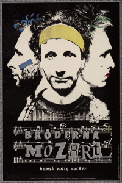
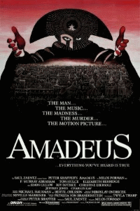
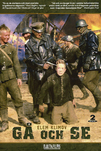
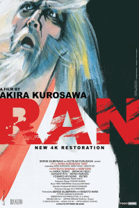

In the morning of February 28, 1986, shortly after 08:00 a.m., Olof Palme talks on the phone with Jan O Karlsson, State Secretary at the Ministry of Finance. The talk family politics and Palme say that he was going to play tennis.
Olof Palme leaves his residence at Västerlånggatan 31 in the Old Town at 08:45 a.m. he start to walk the 265 feet (80 meters) to the pic-up place - Västerlånggatan is a narrow walking street so there is a chosen pic-up place for the government car - Palme meets the bodyguards John-Erik with his colleague Björn half way, they go to the car and then drive to the Royal Tennis Hall.
Olof Palme and Harry Schein usually tried to play tennis for an hour on Tuesday mornings, but this week Olof Palme had been on a tour of Jämtland – a part of northern Sweden – so it had to be Friday morning from 9:00 to 10:00 a.m. instead.
Harry Schein states in a later interview that Palme was in a brilliant mood after tennis, perhaps because Palme won the tennis (6:1, 4:2) – "Palme was a highly competitive person, and much better as a winner than he perhaps was as a loser."
After taking a sauna and showering, Olof Palme joined the waiting bodyguards at the car. They left at 10:35 a.m. to go to Rosenbad, but on the way to his workplace, Olof Palme requested that they drive past Ströms Herrekipering to change the jacket he had bought the day before.
The day before – Thursday – Palme had been out shopping for a jacket without the bodyguards' knowledge, but when he got home, Lisbeth had disliked it. When they arrived at Ströms, one of the bodyguards followed Palme into the store, where they stayed for 10–15 minutes.
When they arrive at Rosenbad at 11:00 a.m., the bodyguards accompany Olof Palme to his office to discuss the program for the weekend. Olof has nothing planned so he gives the bodyguards time off and says that he will get in touch if the plans change after the bodyguards leave.
When they arrived at Rosenbad at 11:00 a.m., the bodyguards accompanied Olof Palme to his office to discuss the program for the weekend. Olof had nothing planned, so he gave the bodyguards time off and said that he would get in touch if the plans changed after the bodyguards left.
Olof Palme went through the day's program with his assistants Ann-Marie W and Inga-Lena W. In addition to the fixed points, there was certainly discussion about the trip to the Nordic Council meeting in Copenhagen, where Palme was chairman, after the weekend. He also tried on the new suit he had bought for the meeting to get their opinion.
At 11:30 pm Olof Palme is visited by Iraq's ambassador.
Olof Palme was appointed mediator of the United Nations in the Iran–Iraq War in 1980. He had a meeting booked at 11:30 a.m. with the Iraqi ambassador. The ambassador wanted to discuss the new resolution taken by the UN on February 24.
Mohammed Saeed Al-Sahhaf, Iraqi ambassador in Stockholm from 1985-87. He is also known as "Baghdad Bob" for his unrealistic statements as Minister of Information during the Iraq War (2003).
A memorandum found during an investigation on March 10, 1986, in the security cabinet in Palme's office, shows that the conversation mainly concerned the current situation in Iraq at that time. At the end of the conversation, the Iraqi ambassador stated that Iraq was concerned about the information regarding Swedish arms exports to Iran. Palme replied that he was also worried. He recalled. on the ongoing Bofors investigation and assured that the Swedish authorities were working the problems in question.
At 2:15 p.m., Olof Palme gave an interview to editor Ingvar Ygeman of the union paper "Statsanställd." After the interview, photographer Johan Wahlbärj was to take some pictures. Someone suggested taking them by the window, but the photographer pointed out that perhaps they shouldn't take that risk. Palme then allegedly replied: "Yes, you never know what's out there."
Västerlånggatan 31, Olof Palme's residence.
The Myrdal couple donated the property to the Social Democratic Party, with the wish that its chairman would reside there. Prime Minister Olof Palme moved from his terraced house in Vällingby to Västerlånggatan 31 in early 1983. The family lived in a 227-square-meter, three-story apartment with its own lift and a view of Riddarfjärden. Palme's widow, Lisbeth, moved from the apartment in 1996, and it was subsequently rented by the British Embassy from 1997. Lisbeth passed away in 2018 at the age of 87.
When Olof arrives at his home just before 6:30 p.m., he calls his son Mårten. Olof and Mårten spoke generally about a population study made in Stockholm and Mårten's thesis writing. Olof also said that he and Lisbeth were going to go and see the movie 'My Life as a Dog.' The son then mentioned that he had bought tickets for himself and his girlfriend to the Grand Cinema for the movie 'The Mozart Brothers,' which he thought started at 9:00 p.m. Olof then said that he had talked to Lisbeth about that film as well. Mårten, hearing Lisbeth apparently comment on 'The Mozart Brothers' in the background, understood that she had overheard their conversation. Olof then said, 'we'll see if we also go to Mozart, and if so, we'll see each other outside the cinema.
According to Lisbeth, she and Olof decided less than an hour before they left home to go to the same cinema as Mårten and Ingrid. No outsider could have known that Lisbeth and Olof were going to the Grand.
Just before they left home, Olof spoke to Sven Aspling on the phone and then mentioned that they were going to the cinema, but not where or what movie.
The Palme couple leaves their home in Stockholm's Old Town 📍vesterlånggatan 31 at 8:35 p.m. on a Friday evening. They walk through the narrow alleys toward the Old Town metro station, a distance of 820 feet (250 meters).
The air temperature is -6.8°C (19.8°F) with a brisk west-south-westerly wind of 4 m/s (9 mph) sweeping through the city. The curbs are covered in ice, and pedestrians hunch against the wind, rushing forward with their hands deep in their pockets. There is also 25 cm (10 inches) of snow on the ground.
Olof Palme is dressed in a gray-blue suit, a dark blue raglan coat, a white knitted scarf, dark gloves, short suede boots, and a brown-black fur hat. Lisbet Palme wears a medium brown suede coat with a brown fur collar. The bottom edges of the coat and sleeves are trimmed with fur, and it has exposed seams. She also has a dark blue scarf and a white knitted hat.
The Palme couple had no bodyguards that evening. Palme vas assigned two bodyguards but the were an call at there home, Palme almost never had his bodyguards when he was off duty. Olof liked to walk, and the bodyguards always convinced him that it was safer to take the car. In fact, when Olof lost the election in 1976, a reporter asked him how he felt, he replied – "It’s going to be great not having to experience the world through a car window"
When the Palme couple arrive at the Old Town metro station 📍Old Town metro station and pass the barrier, Lisbet shows her monthly pass and Olof pays 6 kronor to the ticket inspector Sergiusz, who recognizes him and wishes him a pleasant journey.
They take the stairs up to the western platform for northbound trains. After a short wait, the green line number 17 rolls into the station at 8:42 p.m. Olof enters through the back door of the second carriage. The train is crowded, so the couple stands for the three stations on their way to Rådmansgatan. Olof holds on to a vertical pole, and Lisbet stands next to the door.
At the Rådmansgatan metro station, the Palme couple gets off and walks toward the southern entrance. Outside the barriers, Lisbet first heads in the wrong direction. Olof stops and calls out, "It's this way!" Lisbet turns and walks toward Olof, who is waiting for her. Together they walk toward the entrance at 📍Sveavägen 53.
The couple walked south the 400 feet (125 meters) to the Grand cinema.
The Grand cinema was not a typical mainstream movie theater; it was known for showing more serious and artistic films. The evening of February 28, 1986, was no exception, as evidenced by its film selection that night:
| Grand 1 | Grand 2 | Grand 3 | Grand 4 |
|  |  |  |  |
| Mozart Brothers | Amadeus | Come and See | RAN |
Outside the Grand cinema 📍Sveavägen 45, the Palme couple meet their son Mårten. They greet briefly before Olof and Lisbet go into the foyer to buy tickets. Mårten has already been at the cinema earlier that day and bought tickets for himself and his girlfriend.
The lobby is bustling with people. Olof first misunderstands the line's gender and accidentally cuts in front of a few people, but Lisbet corrects him, and he moves to the back of the line. Behind him are Curt Lidgard and his wife, whom the Palme couple knows. They talk while standing in the queue.
Mårten Palme's girlfriend Ingrid, who has arrived early at the cinema, sees the Palme couple in the ticket queue. She walks up to say hello, and Lisbet tells her that Mårten is standing outside. Ingrid goes out into the street and sees Mårten talking to some friends.
When Olof arrives at the ticket window, the ticket seller Göran recognizes him and Lisbet. The couple has arrived quite late, and there are not many good places left. Göran thinks they should get good seats, so he gives them two tickets that are pre-ordered for director at the Sandrew cinemas, booked by his secretary.
The Palme couple ends up in row 8, close to the aisle in the middle of Auditorium 1—the largest of the four theaters at the Grand cinema. Mårten and his girlfriend are sitting diagonally behind them.
Confederation of Professional Employees chairman Björn Rosengren and his wife Agneta see that Olof Palme is sitting in front of him. During the commercials, they talk to each other and plan a meeting when Olof returns from the Nordic Council in Copenhagen, where he was supposed to travel on Monday. Lisbet feeds Olof candies and says that they should stop talking about work and enjoy the movie.
When the performance of "The Mozart Brothers" ends, the Palme couple lingers and leaves the auditorium only when it's almost empty.
Anna, a young girl, sees Olof Palme in the lobby and walks up to him. She thinks the film is so good that there should be greater cultural funding to make good Swedish films. She says this to Olof, who seems bothered and doesn't answer. The Palme couple then walks out through the doors to Sveavägen.
Outside the cinema, the Palme couple meet their son Mårten. They walk a bit south because there are a lot of people on the street. Outside a bookstore, they stop to discuss the film. Olof has a film magazine and wants to read the cast – he has previously been offered a role in the film but turned it down. He walks up to the shop window to catch the light, but just then it goes out. He and Mårten think it's strange and stare in to see if anyone is still in the store.
Mårten suggests that they take a taxi home to the parents to drink tea. Lisbet thinks it's late, and Olof says that he's been sitting all day and wants to stretch his legs. They decide to part ways.
Mårten and his girlfriend walk north toward Ingrid's apartment on Vanadisvägen, while the Palme couple walks south toward their home in the Old Town.
As they pass the hot dog stand, located on Sveavägen 📍Sveavägen 39 just before the intersection with Adolf Fredriks kyrkogata, the proprietor Najic sees them. He watches Olof and Lisbet Palme walking along Sveavägen. About 48 feet (15 meters) in front of the couple are two well-dressed men, and about 32 feet (10 meters) behind them is another man. Najic gets the impression that the latter man has poor taste in clothes. He is preoccupied with a customer, and when he looks up again, the couple is gone. He only sees the two men who have gone on ahead, further up Sveavägen.
The couple crosses the intersection of Sveavägen and Adolf Fredriks kyrkogata. On the other side, Lisbet stops at the shop window of the shop Sari 📍Sveavägen 48, which sells Indian clothes. That's where her dress for the Nobel banquet had been mended. During their continued walk south, Lisbet walks to Olof's right.
Nicola F is on his way home from his job as a chef on Kungsgatan and walks north along Sveavägen. Level with the entrance to number 44, outside the La Cartarie shop, he catches sight of the Palme couple. They are about 64 feet (20 meters) in front of him and are moving south at a leisurely walking pace
After about half the distance, they meet, and Nicola passes the couple. He walks closest to the street, while Olof Palme stays closest to the building wall. Nicola notices a man working in the store's window, and another man walking 16 to 32 feet (5 to 10 meters) behind the couple.
The man behind is wearing a blue jacket. Nicola perceives him as older and thinks he is too old to be a security guard. The jacket resembles a Tenson jacket, reaches to the middle of the thigh, and has a blue color reminiscent of the back of a Stockholm telephone directory from the era.
The memorial plaque at the intersection of Sveavägen and Olof Palmes Gata (formerly Tunnelgatan).
"AT THIS PLACE, SWEDEN'S PRIME MINISTER OLOF PALME WAS MURDERED ON 28 FEBRUARY 1986"
Av Eskil Malmberg - Eget arbete, CC BY-SA 4.0, Länk
The shot that killed Olof Palme was fired from a distance of about 4–12 inches(10–30 cm) . The bullet entered through the back seam of his coat, approximately at shoulder blade height, crushed the spine, tore the body's major artery and trachea, and exited through the chest. Injuries of this type are not compatible with life. They cause the legs to immediately fold and the body to collapse to the ground. Olof Palme died instantly.
The shot fired against Lisbet Palme was fired from a distance of about 27–39 inches (70–100 cm). It entered through her suede coat on the left side of her back, approximately at shoulder blade height, tore the clothes she was wearing underneath, caused a scratch along her back, and exited through the right side of the back of the suede coat.
Anders B has been at a company party at the St. Clara restaurant and is now on his way to an afterparty at the Kåren disco on Holländargatan 51. His group plans to first withdraw money at an ATM on Sveavägen. While waiting for his friends, he changes his mind and decides to go home instead.
After leaving his friends at the ATM, Anders walks right behind the Palme couple. He sees what he perceives as a group of three people in front of him. They are ahead of him by at least what seems like 16 feet (5 meters) of walking time. They seem to be having a good time and are chatting with each other.
Two bangs can be heard from the group in front. Anders is only about 3 meters (10 feet) behind them. Anders perceives the sound as firecrackers. The person walking in the middle immediately falls to the ground, and a cloud of smoke rises that slowly disperses. The woman screams something that Anders interprets as a foreign language.
After the shots, Anders takes shelter in a recess of a doorway—the goods entrance to the Dekorima store—and therefore does not see much of the perpetrator's escape.
Leif is driving south in the left lane on Sveavägen, approaching the intersection with Tunnelgatan. In front of him is a taxi, which he perceives to be a light-colored Mercedes. He hears a bang, then another. It quickly becomes clear that something serious has happened
The taxi, which is further ahead at the intersection, immediately makes a U-turn and stops at the curb, beside a man lying on the street. Leif performs the same maneuver and stops his car in front of the taxi.
He picks up the handset of his mobile phone and dials 90 000 for the Alarm Center. He dials the number twice, unsure if he needs to dial the area code first. The call is registered with the Alarm Center at 11:22:20 p.m. Leif says: "Yes... there's a murder on Sveavägen."
In the background, alarm operator Sonja can be heard saying to her colleagues: "murder on Sveavägen," before she uses a number transmitter to forward the call to the police switchboard. While Leif waits for an answer, fragments of a discussion can be heard from the street.
According to the LAC log, which records all calls to the Alarm Center synchronized with the 'Miss Ur' time service, Leif's call was cut off at 11:23:40 p.m.—just before the police answered: "Police... Hello." The log provides an exact time marker for the call's duration.
At the request of the police, Leif carries out a reconstruction of the events. He concludes that it takes 43-45 seconds from the first shot until he calls the Alarm Center and is connected. This places the time of the first shot at approximately 11:21:35 p.m.
Hans J is the driver of the light-colored Mercedes that Leif J sees. As his car is still rolling, Hans starts to call the switchboard. First, he presses the button for Stockholm's taxi switchboard, but the call is put in a queue. He could have asked for priority, but in his excitement, he didn't think about it. Instead, he picks up the microphone and calls Solna Taxi directly.
It takes about ten seconds from the shot until he makes contact with a woman at the switchboard—Ingrid Z. When the call is connected, he is already at the scene of the crime, and his passenger has rushed out of the car and approached the man lying on the ground. Hans announces that someone has been shot at the Sveavägen-Apelbergsgatan intersection. The switchboard promises to contact the police. He has the street wrong, however; Apelbergsgatan is the next intersection to the south.
Ingrid Z is working in Solna Taxi's switchboard when taxi 344—a Stockholm car—calls her via radio. He shouts: "Solna Taxi, Solna Taxi!" and continues: "Hurry up, hurry up, there's a shooting going on – someone is shooting!" The address given is Sveavägen at Apelbergsgatan.
The switchboard operator immediately dials the speed dial for the Stockholm police's command center. She has to wait a couple of minutes before anyone answers. The policeman who finally takes the call seems younger and annoyed by her haste. He replies, "We'll see what we can do," in a way that truly irritates her.
Ingrid Z calls out to car 344, which she believes is the car that first alerted her. She receives no answer. A colleague advises her to call car 744, and she makes contact there. The taxi driver then informs her that the victim is Olof Palme.
The switchboard operator immediately calls Aftonbladet, a major Swedish tabloid newspaper, and tells them what happened, but is not believed at first.
When the driver first called her, she noted the time directly in her log: 11:22 PM. She has a clock directly in front of her and always makes a habit of writing down the time when something significant occurs—and she immediately understood that this was such an event.
Anders D is a taxi driver working at night. He has picked up three young women from Barkarby station and is driving them to Kungsträdgården.
Anders D, At his white Mitsubishi Galant at the crime scene in 1986.
wpu.nuOn Sveavägen, he gets a red light at the intersection with Tunnelgatan. While waiting for the light to turn green, he looks around. On the east side of the street, he sees three people: a man and a couple standing and talking. The lone man stands with his back to the building.
When the light turns green and Anders starts to move into the intersection, he hears a loud bang from the direction of the three people. He turns his head to see what's happening and hears another bang.
He sees that the man who had been standing with his back to the building's facade is holding a weapon in his right hand, aimed at the couple. He sees a flash of fire and smoke from the weapon, which has a long barrel—like a Colt.
A man falls to the ground. The perpetrator runs onto Tunnelgatan, in the direction of Luntmakargatan.
Anders estimates that the fleeing man is about 180-185 cm (5'11" to 6'1") tall. He has no idea of the man's age, but notes that he does not move with the agility of a younger man—his step is somewhat slow. The man wears a gray hat pulled down over his forehead and a grayish Ulster coat with black speckles. His face is not visible.
Anders D pulls over to the right, west side of Sveavägen, stopping at the curb. He contacts the Järfälla Taxi switchboard via radio, and operator Ann-Louise answers. Anders tells her that a man has been shot and asks her to call the police.
Ann-Louise can't find the number for the police's direct line, but a person in the room gives her a direct number to the Stockholm Police's Liaison Centre (SBC). She calls there and reports that someone has been shot at the intersection of Sveavägen and Tunnelgatan.
Radio operator Ulf H at the Liaison Centre asks Ann-Louise to contact the driver and ask him to stay at the scene until the police arrive. He then ends the call. Ann-Louise contacts Anders via radio, informs him that the police are on their way, and asks him to wait.
The telephone message from Ann-Louise leads to an intervention message (IM) being registered by Ulf in the Liaison Centre's computerized system at 11:23 p.m. Since this is the registration time, the call must have started shortly before.
Ann-Louise then calls the LAC (Alarm Center) and asks if they have received any reports of a shooting. LAC replies that they are not aware of anything. She informs them that the police have already been alerted, that taxi 2517 is at the scene of the murder, and asks them to send an ambulance. Based on her information, LAC dispatches ambulance 912 to the scene.
Radio operator Ulf H at the Liaison Centre (SBC) sends out an area alert for a shooting at Tunnelgatan-Sveavägen. Area 1 covers districts 1, 2, and 3 – specifically Norrmalm, Östermalm, and Södermalm. Two police units report they are available and are ordered to the scene.
Around the same time, Polis unit 2520, with Commander Gösta Söderström acting as the field supervisor for all units in the area, is on Kungsgatan. Commander Söderström and the driver, Ingvar W, are flagged down by a man who says that there has been a shooting on Sveavägen. The police immediately head for the crime scene, and during the journey, they hear the alert from SBC on their radio.
The man who stopped the police car is Anders A. He was standing on Kungsgatan, about 330 feet (100 meters) from the intersection of Kungsgatan and Sveavägen, across from the restaurant King Creole. He had just heard taxi driver Anders D call the switchboard about the shooting. When the taxi company confirmed that the police had been alerted, Anders A spotted a police car on the other side of Kungsgatan. He got out of his car and stopped the unit.
After the shots were fired, the perpetrator fled the scene, turning into Tunnelgatan to the left of the container offices, crossing Luntmakargatan, and continuing up the stairs to Malmskillnadsgatan.
At the time, a stack of container offices stood in the middle of Tunnelgatan. These were arranged in two rows, three containers high, for the façade renovations taking place further along Tunnelgatan and at the lower part of the stairs leading up to Malmskillnadsgatan.
After the shots, the murderer runs into Tunnelgatan to the left of the container offices and up the stairs to Malmskillnadsgatan.
Lars J has been to the pub Tre Backar, where he listened to jazz with some friends. He drinks a glass of port wine. At 11:15–11:20 p.m., he leaves the pub and walks alone south on Luntmakargatan.
When he is at the intersection of Luntmakargatan and Tunnelgatan, he hears shots from Sveavägen. He looks over and sees a man fall to the ground, while the woman next to him starts screaming hysterically.
Lars takes cover behind the container offices on Tunnelgatan. He hears the perpetrator come running. The man passes him and continues up the stairs toward David Bagares gata.
He sees the man at an oblique angle from behind. The man is about 35-40 years old and is dressed in a dark, jacket-like garment. Lars gets the impression that it could be a dark down jacket. He also thinks the man is wearing something that looks like a cap.
When the man is about halfway up the stairs, Lars walks up to the beginning of the stairs. He had previously stood and looked down at Sveavägen, considering whether he should go there and help.
Lars hesitates for a moment. When the man disappears over the top of the stairs, he decides to follow, perceiving the man to be the perpetrator of a murder.
Yvonne and Ahmed had been at a Moroccan club on Johannesgatan, which they left at 11:15 – 11:20 p.m. They walked south on Johannesgatan, turned onto David Bagares Gata, and continued along its northern sidewalk toward Sveavägen. There were many parked cars on the side where Yvonne and Ahmed walked, and only a few on the opposite side.
When they had walked about 5-6 steps into David Bagares Gata, Yvonne noticed a man running on the opposite sidewalk. She immediately got the impression that the man was being chased. He turned around two or three times during the time it took until he passed them; he wasn't running very fast.
While running, the man tried to put something into or take something out of a bag he was carrying in his left hand. The man made movements as if he was trying to pull up a zipper with his right arm. The bag was approximately 20x15 cm (about 8x6 inches) in size. Yvonne wondered to herself why he didn't stop and fix the bag.
The man was between 35-45 years old, about 175-178 cm (approximately 5'9" - 5'10") tall, not fat, rather stocky or rough, and had light skin on the little Yvonne could see of his chin. He had no beard. He had a distinct coat, probably black, that was unbuttoned and fluttering. The coat was about knee-length. It must have been made of some thin material, as it fluttered a lot. The coat also appeared to be dark on the inside; no lining was visible. Otherwise, the man was dressed in dark clothing, and Yvonne perceived it as if he was wearing a dark sweater under his coat. Yvonne did not see if the man was wearing glasses. She did not react to whether the man was wearing anything on his head.
The man had his head bowed while he ran. He kept his eyes fixed on the bag he was holding. It seemed like it was hard for him to run. At one point, it seemed that the man slipped. He was going downhill, and it was icy.
Lars J, who had decided he would follow the man, meets Yvonne and Ahmed almost at the top of the stairs. He asks if they've seen anyone run by. Yvonne replies, "He ran straight ahead here." Lars does not say anything to the couple about what has happened on Tunnelgatan but continues up the last steps and stands at the intersection of Malmskillnadsgatan and David Bagares gata. Lars set off walking down David Bagares Street and walked in the lane outside the parked cars.
He looks down David Bagares gata to see if he can spot anyone. At the same time, he wonders if he dares to continue following. He thinks he glimpses a man between parked cars on the north side of the street. The man disappears. Lars does not see the man get into a car—he doesn't see or hear any door open or close.
As soon as the Taxi came to a stop, the three passengers ran out of the taxi and up to the bleeding man who was lying on his back on the pavement.
Stefan G rushed to the man lying on the pavement. He and others turned the man to a recovery position and he took the man's pulse, feeling it faintly. He saw a lot of blood coming out of the man's mouth, and managed to clear it out before starting mouth-to-mouth resuscitation. At the same time, a woman, later identified as Anna H, had arrived at the scene and started CPR. They performed these actions for what Stefan estimates was about two minutes, after which an ambulance arrived and took Palme away.
Kenneth E and his group jumped out of the taxi and put the man in a recovery position. Kenneth, meanwhile, took care of Lisbet Palme—or "the woman," as he did not recognize the people—so that the others could perform their life-saving measures. Soon, police and an ambulance arrived and took care of everything. He then spent a moment comforting Lena, a woman from their group.
Lena B jumped out of the car as soon as the taxi stopped and ran up to the man lying on the ground. At the same time, another woman, who she later learned was named Anna H, and a man in a gray jacket came forward. Lena had initially thought that the man had collapsed due to illness, but when she arrived, she saw the blood pulsing and understood that he had been shot. She found the whole thing very unpleasant and felt that she could not look any longer, so she walked away toward the building facade, turning her back to the man on the ground. She squatted there to try to recover. She almost threw up from what she had seen. While she was sitting there, Kenneth came up and tried to comfort her. Lena had seen a police car arrive at the scene, but she did not make many other observations because she kept her face to the building and her back turned to the events.
After the police arrived and the ambulance left with Olof and Lisbet Palme, the three passengers left the crime scene in the same taxi that they arrived in.
Anna H, 17 years old and in her second year of nursing school, was at the cinema with her friend Karin J on the evening of February 28, seeing the film "48 HRS" at Filmstaden on Mäster Samuelsgatan.
They left the cinema at 11 p.m. and then met three friends on Norrlandsgatan. These friends, who were traveling by car, offered to drive Anna and Karin to the Central Station. They drove from Norrlandsgatan to Sveavägen, passing Kungsgatan in the left lane. Shortly after passing Kungsgatan, Anna observed a man lying on Sveavägen's right (eastern) sidewalk.
Anna got the impression that the man might have had a heart attack or epileptic seizure, and the car stopped. Anna and Karin got out of the car and ran up to the man.
When Anna H reached the man lying on the sidewalk, she saw that he was bleeding from his mouth and nose. A woman was standing next to the man, and Stefan G was crouched down by the injured person's head. She felt for a pulse, checking first on his neck and then on one wrist. She didn't feel a pulse at that time. She turned the man onto his back, gave him two rescue breaths, and then proceeded with chest compressions. Stefan G gave artificial respiration by blowing air mouth-to-mouth.
The woman standing next to Anna seemed to be in shock and tried to push Anna away, shouting that an ambulance would come and that doctors would perform surgery. Karin tried to take care of the woman and prevent her from interfering with Anna.
Gösta Söderström arrives as the first police commander at the murder scene and, in accordance with police practice, assumes the role of incident leader. Police van 3230 arrives seconds later.
There are about ten people at the site when the police arrive. The scene is chaotic. On the sidewalk lies a man, covered in blood and in a pool of blood. Anna H, seventeen years old, and Stefan G try to revive him with mouth-to-mouth resuscitation and CPR. Lena B is sitting with her head against the wall; Kenneth tries to comfort her. Lisbet Palme runs around the crime scene, shocked, shouting that they need to order an operating table, with Karin who is trying to calm her down.
Several people point towards Tunnelgatan and shout that the perpetrator ran in that direction. Söderström orders the commander of Unit 3230 to pursue the perpetrator. Kjell Ö, commander of Unit 3230, dispatches two patrols of two police officers each to hunt down the perpetrator, even though there is no description of the suspect. He and the driver remain at the scene.
The four police officers run into Tunnelgatan with their weapons drawn. After they have passed Luntmakargatan, they meet Yvonne and Ahmed, who are continuing down the stairs after having spoken with Lars J.
It is not possible to say what happens at the meeting between Yvonne, Ahmed, and the police; the information differs and is contradictory.
I will return to the police and Lars J in Chapter 2: The Hunt for a Murderer.
Yvonne and Ahmed went down to the murder scene and reported to the police there – likely at the request of the officers they met. The police took their information, and they then left the scene. Yvonne's information was subsequently lost, and Hans Holmer had to issue a public appeal for her at a press conference. She then reported to the police and was questioned on March 2.
Söderström tries to make contact with the woman moving around the body, but is initially rebuffed. On a second attempt, she screams: "Don't you see who I am? I am Lisbet Palme, and there lies my husband Olof – the Prime Minister." Söderström doesn't believe her right away, but walks up to the bleeding man on the street, whose face is covered in blood. He recognizes him by his characteristic nose. When he then tries to get Lisbet into his car, she resists and refuses to leave her husband.
Söderström goes to his car and, around 11:30 p.m., announces via radio to the Police Liaison Centre (SBC) that it is the Prime Minister who has been shot.
Ambulance 951 from Sollentuna is on assignment to Sankt Göran's Hospital. On their way back, driver Peter A and caregiver Christer E choose to drive through the city. When they are on Kungsgatan, they see a police car turn on its blue lights and drive quickly up the street. At the intersection with Sveavägen, the police car turns right.
The ambulance gets a red light at the same intersection. They see a police van driving north through the intersection with its blue lights flashing. When the light turns green, the ambulance turns right and continues at a slow pace north on Sveavägen loking att Stockholms night life.
As they approach Tunnelgatan, they see several police cars parked on the right sidewalk. After a few meters, a man steps out into the street with waving arms and stops the ambulance. Christer E jumps out. On the sidewalk lies a bloodied man. He tries to give the man oxygen but it is difficult to get any air in thanks to the victim's injuries.
Christer E quickly realizes that there isn't much they can do for the patient at the scene. The best thing is to get him to the hospital as soon as possible. Just as he and his colleague are about to put the man on the stretcher, Ambulance 912 arrives, alerted by the Alarm Center (LAC). In it are driver Maria D, who is working extra this evening but is also a police officer at VD1, paramedic Kenneth L, and student Eva L.
The ambulance staff are fully concentrated on their tasks. It is only when the body is loaded into Ambulance 951 that they realize it is Olof Palme lying on the stretcher. Kenneth L accompanies the ambulance to assist Christer E with resuscitation attempts during the journey.
Just before the ambulance leaves the crime scene, there is a knock on the door. A man says: "The wife must come too." Lisbet Palme accompanies ambulance 951 to Sabbatsberg Hospital. Upon departure, Peter contacts the Alarm Center (LAC) via radio; the call is registered in the LAC log at 11:28:20 p.m.
Claes B at the Alarm Center (LAC) calls and alerts the emergency department at Sabbatsberg Hospital; the call is registered in the LAC Log at 11:28:40 p.m.
When the ambulance arrives at Sabbatsberg Hospital shortly after 11:30 p.m., the medical staff is prepared, and Olof Palme is rushed into the emergency room.
Several resuscitation attempts are made, including a so-called open-heart massage, where the doctor inserts his hand beneath the ribcage to manually stimulate the heart. But Olof's injuries are too severe, and his life cannot be saved.
At 12:06 a.m., Dr. Claes Wallin officially declares Olof Palme dead at Sabbatsberg Hospital.
12:20 a.m., TT broadcast a so-called flash about the Prime Minister's death.
🔔🔔🔔🔔🔔🔔
TTA 0730 1 i 1 mo sr
- f -
Olof Palme död.
860301-0020
NNNN
TT sends out the news of the Prime Minister’s death via teleprinter to media outlets around the world. Ten minutes later, the announcement reaches American television screens. But in Sweden, most people learn of the tragedy from the morning papers.
In 1986, news was not broadcast on Swedish Radio at night. In P3, the first two hours after midnight was "The Music of the Stars", which was led by Staffan Schmidt. There was a red light in the studio that was supposed to be on if something extra serious happened but they had forgotten to plug it in after some renovation.
A while after midnight the phone rang in the studio and a lady wondered how they could play pop music when the prime minister was dead. Staffan took it as a crank call but when a colleague from Radio Sweden called in, it became clear that something serious had happened. he run in to the news room and look at teleprinter and read it in black and white, Olof Palme is dead.
At 1:10 a.m., as the song Who's Zoomin' Who by Aretha Franklin faded out, host Staffan Schmidt spoke:
"You're listening to Sweden's Night Radio. It's ten minutes past one, and we're interrupting the program now for a special news bulletin from the Ekot news desk."
The hastily called domestic political reporter Jan Ström then read out the following message:
Sweden's Prime Minister Olof Palme is dead. He was shot tonight in central Stockholm. Olof Palme was shot down at the intersection of Tunnelgatan - Sveavägen and he later died at Sabbatsberg Hospital.
The government has been informed. Finance Minister Kjell-Olof Feldt and Deputy Prime Minister Ingvar Carlsson have been informed and both confirm that Olof Palme has died. The police are looking for a man in his 35s - 40s with dark hair and a long dark coat. The police are looking for the murderer and a major search operation is underway in Stockholm. The taxi exchange in Stockholm has sent out the signal. According to the police's command center, it was a taxi driver from Järfälla taxi who noticed that a person had been gunned down. The driver alerted his taxi switchboard, which in turn alerted the police. The command center sent a police van to the scene. Olof Palme was shot at 11:30 p.m., i.e. half past twelve, an hour and a half ago.
The Government has gathered for an extraordinary meeting. Ingvar Carlsson, the Deputy Prime Minister, will chair the meeting. He left the comment when he came to Rosenbad tonight that it is terrible, he told TT, when he arrived in Rosenbad.
Olof Palme would have turned 59 years old within a few months. He has been chairman of the Social Democratic Party since 1969 and prime minister from 1969 to 1976 and from 1982.
Due to what has happened, we will of course change the night's program on the night radio. And the Ekot news desk will of course return with more news when we have something to report.